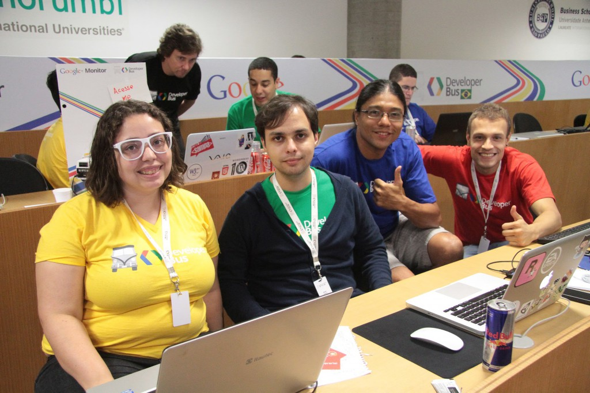

Fiquei alguns dias sem postar no blog, mas foi por um bom motivo. Aliás, um excelente motivo! Participei do Google Developer Bus, um hackathon de 3 dias, e minha equipe ganhou a competição com um app para fidelização de clientes em academias com conceitos de gameficação, o PowerUp, e vamos conhecer o escritório do Google na Califórnia!
Não sei em por onde começar a descrever minha felicidade! Vou contar um pouco de como foi o evento, qual foi minha parte nisso e um resumo de cada dia do evento. O texto ficou longo, pois tentei contar quase tudo que lembrei, espero que gostem! Não deixe de acessar o site do PowerUp, e curtir a página no Facebook e Google+, isso vai nos ajudar muito! 
Google Developer Bus
O Google Developer Bus é o primeiro Hackathon organizado pelo Google na América Latina, e ocorreu em quatro países: Argentina, México, Colômbia e Brasil. Mais do que uma simples competição, o evento teve como foco criar soluções criativas utilizando serviços do Google para solucionar problemas de pequenas e médias empresas.

A edição brasileira contou com mais de 2.200 inscritos, e destes foram selecionados apenas 44 participantes, divididos em quatro categorias: Front-end (eu), Back-end, Design e Project Manager. A seleção dos 44 participantes foi através de três etapas que consistiam em um teste online sobre o seu conhecimento em relação a sua categoria, um teste de lógica e um vídeo que cada participante gravou contanto sua experiência e o que esperava do evento.

Além do recorde de inscrições, no Brasil teve também o recorde de equipes, pois eram para ser apenas 10, sendo que 4 participantes foram chamados como lista de espera. Felizmente, no dia do evento, todos que foram selecionados compareceram, e a organização do evento permitiu que o pessoal da lista de espera formasse um novo grupo, deixando a competição ainda mais desafiadora com mais concorrentes.
Foram 3 dias de evento, onde nos encontrávamos todo dia as 8h na frente do escritório do Google em São Paulo, e um ônibus nos levava até a Universidade Anhembi-Morumbi da Vila Olímpia, onde ficávamos até as 20h. Porém, mais do que apenas um espaço para o evento, o Google fez questão de colocar a sua cultura nestes 3 dias. Então, além da área de trabalho, havia um espaço para relaxar com bebidas e comidas a vontade, locais para descansar, massagem, PS3, fliperama, além de café da manhã, almoço e café da tarde. Tudo muito bem organizado e a vontade, foi demais!

Este evento era também um reality show, e durante três vezes por dia o Neto Marin, funcionário do Google e apresentador do evento, entrava ao vivo através do YouTube para conversar com os desenvolvedores e também entrevistar alguns mentores. Na terceira vez, já no começo da noite, era a vez das equipes apresentarem o andamento do projeto em 3 minutos, o que é algo realmente difícil de planejar.
Além de tudo isso, ainda existiu uma competição social onde cada equipe tinha que cria ruma página no Google+ e divulgar. Quanto mais +1 a página recebia, mais pontos a equipe ganhava para poder trocar por itens premium, como Redbull, Kitkat e massagem. Nos 3 dias de eventos eu dormi apenas 4 horas e tomei muito Redbull, acho que eles tinham que patrocinar este evento junto com o Google.
Dia 1
44 pessoas que nunca se viram tiveram que, em apenas 3 dias, ter um entrosamento muito grande com a sua equipe, e um comprometimento em dar o melhor de si. Isso é tão incrível que nem sei se consegui me expressa nessa frase. Sério. Você consegue imaginer se juntar com pessoas desconhecidas e criar algo criativo em 3 dias, e ainda se preocupar em ganhar uma competição? Com certeza é um sentimento muito bom, e só quem passou pode falar a loucura que isso é.
No primeiro dia ninguém sabia ao certo como seria o evento, mas todos estavam muito empolgados. Na chegada ao prédio do Google cada um ganhou duas camisetas do evento com a cor da sua categoria: verde para Front-end, azul para Back-end, amarelo para Design e vermelho para Project Manager, tudo bem colorido e com a cara do Google! Ganhamos também um crachá bem legal, e logo o sentimento de que algo grande estava por vir tomou conta de mim e muitas outras pessoas.

Chegando na universidade, a primeira coisa que fizemos foi deixar nossas coisas na sala principal de trabalho e ir tomar café da manhã. Após o café, o evento começou pra valer! Além do pessoal da organização, também existiam alguns mentores (inicialmente 10, mas depois chegaram mais). A dinâmica das ideias foi a seguinte: 4 pessoas aleatórias sentavam com um mentor por 10 minutos, e cada um falava de uma ideia qualquer. Se o mentor gostava, ele anotava em um papel e este era entregue para a coordenação. Fizemos este procedimento duas vezes, e uma terceira sem os mentores. A ideia era boa, mas infelizmente a falta de controle de tempo fez com que muita gente não tivesse a chance de falar.
Após isso, os mentores se reuniram para selecionar as melhores ideias e agrupar as parecidas. Eu dei uma ideia de um site para gerenciamento de tarefas com elementos de gameficação para recompensar os desenvolvedores, e esta foi uma das ideias selecionadas para serem escolhidas. Após esta pré-seleção dos mentores, cada um recebeu um número e, em ordem de chamada aleatório, tivemos que colocar um cartão com nosso nome e cor na ideia. A regra era simples: apenas uma cor de cada poderia estar em uma ideia, e isto formaria a equipe. Eu fui um dos últimos a ser chamado, e a minha ideia foi selecionada por outra equipe. Na dúvida, escolhi uma ideia que estava escrito apenas “Healthcare com gamefication”, e nem preciso falar por que isso me chamou a atenção, né?

No momento em que coloquei o meu cartão verde na ideia já haviam outros dois, Design e Back-end, e ao mesmo tempo outro cara colocou um vermelho de Project Manager, e assim a equipe foi formada. Neste momento conheci o André, um empreendedor de Belo Horizonte que tornou-se o Project Manager da equipe. Quando estávamos indo para a mesa destinada ao grupo tive uma surpresa curiosa. Eu conversei apenas com duas pessoas, e bem rapidamente, antes de chegar na faculdade, e estas duas pessoas estavam na minha equipe! A Dani, Designer, me perguntou quem estava distribuindo as camisetas quando ela chegou na frente do Google, e o Fábio, Back-end, sentou do meu lado no ônibus e conversamos um pouco sobre o que fazíamos. Incrível, não?
A ideia inicial era criar um jogo que recebesse ações de sensores no corpo de uma pessoa, e isso seria usado para estimular o paciente a completar um determinado exame. Existiam alguns sensores lá, no caso usaríamos cardíacos, mas a ideia for descartada pela sua complexidade. Então, depois de muita conversa chegamos no conceito do PowerUp, um serviço que academias podem oferecer aos alunos para monitorar seu treino e receber recompensas com o objetivo de fidelizar os clientes e incentivá-los a não desistir. A ideia é ter um aplicativo Android para os alunos gerenciarem o seu treino, sendo que os instrutores cadastram o treino através de uma interface web, e disso tiramos diversas estatísticas e relatórios para a academia. As recompensas para os alunos são bem parecidas com o modelo de gameficação do Foursquare: medalhas (bagdes) e pontos, além de um ranking dos seus amigos e um da academia, tudo integrado através do Google+.

Nosso diferencial partiu da ideia, pois o André também é instrutor de Karate e trabalha em duas academias, então além de ter contatos também conhecia as necessidades de instrutores e alunos por um serviço como o PowerUp. Ele montou um formulário para validar a ideia, e também entrou em contato com instrutores e academias, e na primeira noite já tínhamosalguns dados para apresentar, e todos eles validavam a nossa ideia. Além disso, nossa página começou a ganhar muitos +1, e logo nos destacamos.

Enquanto o André corria com a parte dele, a Dani criou a identidade visual, o logo e um mockup do aplicativo. O Fábio começou a configurar o App Engine para usarmos no projeto, e eu comecei a desenvolver um protótipo usando Corona SDK para mostrar algo rodando em um Android na nossa primeira apresentação, e isso causou um efeito muito bom, pois todas equipes começaram a nos ver como um forte adversário. Inclusive o Neto disse isso após a nossa primeira apresentação: “Temos um forte candidato”. Ficamos muito satisfeitos com o primeiro dia, mas ainda tinha muita coisa pra fazer, mais do que o tempo disponível. Quando cheguei em casa naquela noite fiquei configurando algumas coisas no meu computador e adiantando os layouts do aplicativo. Neste dia dormi 4 horas.
Dia 2
O segundo dia começou com todo mundo com muita vontade de desenvolver seu projeto e empolgados com a competição. Existiam muitas pessoas legais e simpáticas no evento, que estavam simplesmente curtindo estar lá, e sinceramente esta era minha ideia também, pois por não conhecer o time e o que as demais pessoas estavam fazendo, não sabia o que esperar. Logo que chegamos, a equipe se reuniu e começamos a conversar sobre o que faríamos no dia. O André deu um update sobre o feedback dos formulários e a página do Google+, todos os números estava crescendo bastante. Descartei o protótipo e comecei o projeto usando o Eclipse e Android SDK apenas.
Com a ideia do PowerUp já definida, nossa preocupação no segundo dia foi quais features deveríamos priorizar para terminar e apresentar na final. Eu fiquei o dia inteiro apanhando dos layouts de Android, pois este foi o primeiro aplicativo que desenvolvi, minha experiência toda sempre foi voltada para jogos, que são bem diferentes. Neste dia a Dani conseguiu terminar praticamente todo layout do aplicativo e começou a trabalhar no site, enquanto que o Fábio já estava com o back-end pronto para integrar com o aplicativo, e foi o que fizemos.

Eu detalhei mais o primeiro dia do evento por que foi quando mais coisas aconteceram, neste segundo dia estávamos todos muito concentrados no trabalho, por isso que não houveram tantos detalhes para contar. Porém, muitas coisas legais aconteceram, como a nossa página no Google+ ser a mais popular, com mais de 2.000 +1 no segundo dia, e alguns grupos já falaram que éramos um forte concorrente para as câmeras. Ah sim, durante todo o evento existiam pessoas filmando e colhendo depoimentos para um making of, que não sei quando ou onde será publicado. Muitos desses videos foram usados nos videos que estão neste post, esse pessoal trabalhou duro também para editar tanto material durante o evento.

Nossa apresentação no final do segundo dia foi ainda melhor, pois tínhamos muito mais dados para apresentar, o mockup do site e do aplicativo estavam praticamente prontos, e toda nossa tecnologia bem definida. Eu tive alguns problemas com a integração do login através do Google+, mas isso misteriosamente foi resolvido depois que criamos novamente o projeto no Google Cloud. Chegando em casa, virei a noite trabalhando no aplicativo Android, na integração com um leitor de QR code (usado pelo aplicativo para identificar qual treino deve ser feito em um equipamento com seu código) e no login do Google+. Toda equipe virou a noite, estávamos juntos no hangouts do grupo, e foi este tipo de atitude que nos motivou a dar o melhor para apresentar o melhor projeto possível.
Este foi um momento decisivo pra mim, e acredito que para todos da minha equipe e as demais equipes. Virar a noite fez a diferença, e sem isso não sei como teria sido a nossa apresentação do aplicativo no terceiro dia. Em alguns momentos pensei em ir dormir, estava muito cansado, mas logo me animava e voltada a programar. Não foi fácil, mas valeu muito a pena no final. Neste dia não dormi.
Dia 3
No último dia do evento, a empolgação virou desespero, e todo estávamos muito pressionados para terminar os respectivos projetos. Na parte da manhã terminei a integração do Google+, o layout da tela principal e detalhe do aplicativo, que foi integrado com o leitor de QR code, e a exibição de uma medalha para o aluno por ter completado o seu treino. O Fábio terminou a parte dele e ajudou no site. A Dani terminou de montar o CSS e HTML das páginas, e o André continuou seu trabalho nas redes sociais. Neste dia chegamos nos quase 4.000 +1 na nossa página, sendo que a segundo equipe com mais +1 tinha 1.200. Nossos amigos e famílias ajudaram demais nisso!

Enquanto as pessoas técnicas da equipe estavam trabalhando, o André foi atrás de todos os mentores para apresentar o projeto, e fazer disso um treino para a apresentação final. Tivemos também uma pré-apresentação para treinar e pegar feedback, e tudo isso foi essencial para a apresentação final, que focou exatamente no que era importante mostrar para o júri, formando principalmente por empreendedores e pessoas de empresas como o Sebrae.
As 14 horas começou a primeira parte da nossa avaliação, onde cada equipe teve que colocar o código em um repositório no GitHub e os mentores técnicos do evento começaram a avaliar tudo que fizemos. Eu fiquei sabendo disso no terceiro dia, então não tinha muito o que fazer, pois a prioridade era implementar as features principais. Não que o meu código estava de qualquer jeito, eu até fiz boa parte bem feito, mas sempre há coisas que podemos melhorar, e eu sou muito perfeccionista.

Perto do horário limite, 17 horas, terminei as coisas necessárias para a apresentação, e é claro que algumas coisas ficaram de fora. Tentei relaxar um pouco para a apresentação, mas não foi nada fácil. O tempo todo só pensava que o aplicativo poderia dar algum erro, e isso que fiquei meia hora só testando o fluxo básico que seria demonstrado. Por fim, chegou nossa vez e o nervosismo virou empolgação. Na apresentação final, além da demonstração do site com os treinos do aluno, o aplicativo lendo o QR code, abrindo o treino e dando uma medalha para o aluno, e tudo isso integrado pelo login do Google+. O André mostrou mais números interessantes do nosso projeto, e inclusive mencionou que uma academia em Belo Horizonte demonstrou interesse em usar o PowerUp. O que fechou com chave de ouro foi uma foto demonstrando um aluno usando o aplicativo em uma academia, com o QR code no equipamento, e também uma foto de um pessoal em um academia com plaquinhas falando que querem o PowerUp.
Fui uma apresentação rápida, simples e objetiva. Mostramos todo potencial do projeto e as duas interfaces, web e mobile, funcionando e conversando. Tudo isso feito em 3 dias por pessoas que não se conheciam. Alguns grupos mostraram seus projetos funcionando também, e outros apenas a imagens do produto. Após todas as apresentações, o júri se retirou para conversar, e em alguns minutos voltaram com o resultado. Antes de falarem os vencedores, mencionaram dois projetos muito bons que mereceram destaque, o Expense.me e o Vila do Corretor, e então chegou a hora de anunciar o vencedor. O video abaixo mostra a reação da nossa equipe no quando o Neto disse “PowerUp!”.

Diversos sentimentos tomaram conta de mim, fiquei incrivelmente feliz e me emocionei quando liguei para contar para meus pais e minha namorada. Na hora só deu tempo de escrever “Vou pra Califórnia, minha equipe ganhou o Google Developer Bus” no Facebook, e recebi diversas mensagens de parabéns e mais de 100 likes. Foi tão surreal que é difícil até descrever o que senti, foi tudo muito rápido. Eu sabia que tínhamos um bom projeto e uma excelente equipe, mas os concorrentes também. Devo admitir que depois das menções eu tive certeza que ganhamos, pois aquelas duas equipes eram as mais preocupantes, mas só acreditei quando ouvi o nome da nossa equipe e fomos receber o troféu lá na frente, ao vivo.
Depois de muitas fotos, conversas, depoimentos, parabéns, fomos para a festa do Google, que aconteceu em um lugar na Augusta. Eu não consegui ficar muito tempo, pois estava muito cansado e ainda iria dirigir de volta pra casa. Neste dia eu finalmente dormi, cerca de 10 horas ou mais, e acordei ainda sem acreditar que tinha ganhado este concurso e que iria para a Califórnia, conhecer o famoso Vale do Silício.
Califórnia, here we come!
Depois de muita comemoração, nosso foco agora é o que vamos fazer na sede do Google na Califórnia. Sabemos que todas equipes vencedoras vão se encontrar lá, e que também vamos apresentar novamente o projeto, mas não sabemos mais do que isso. Com certeza, estamos muito empolgados. Foi muito legal também ver a notícia que ganhamos em sites como Info, Blog do Google e iMasters.

São tantas pessoas para agradecer, que nem sei por onde começar! Obrigado a todos que apoiaram o projeto na página do blog no Facebook; aos meus amigos e família que apoiaram e ajudaram muito; aos mentores do evento que nos ajudaram a definir o PowerUp; à organização do evento, pessoal do Google e da Globalcode; à Dani, que fez um trabalho incrível no design do projeto em pouco tempo; ao Fábio que desenvolveu todo back-end e facilitou a integração com o aplicativo; ao André que correu atrás das academias, apoio, empreendedores, e todo mundo que pudesse ajudar; a minha namorada Letícia, que esteve sempre do meu lado me motivando e não me deixando dormir; e a Deus pela oportunidade de viver toda essa experiência incrível e única.
Obrigado a vocês meus leitores pelo apoio e incentivo que me dão para continuar meus projetos, como este blog. O Google Developer Bus é mais uma conquista importante na minha carreira, ao lado de tantas outras que me fazem continuar e nunca desistir. Nada é impossível, e a única pessoa que te impede de realizar seus sonhos é você mesmo! Obrigado por ter lido todo este post até o fim e desculpe o texto logo. É tanta coisa pra contar, e infelizmente deixei muita coisa de fora, mas tentei ao máximo contar como foi esta experiência única. Pra finalizar, uma música que não sai da minha cabeça! hahaha
Não deixe de acessar o site do PowerUp, e curtir a página no Facebook e Google+, isso vai nos ajudar muito!